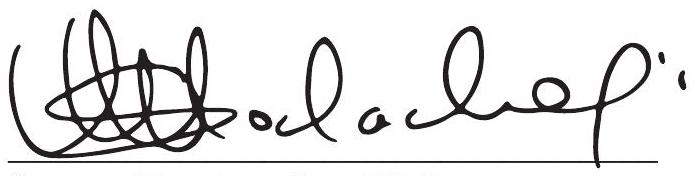

Introduction and Background
Acknowledgements
The development of Kenya's premier Sickle Cell Disease Control and Management Guidelines resulted from concerted efforts of various stakeholders, individuals and organizations in the Country. The Sickle Cell Technical Working Group under the leadership of Professor Fredrick Were wrote all the sections of this guidelines borrowing from best practices across the world and in line with current scientific evidence and experiences. We would like to thank all those who participated in the development of this vastly important endeavour. Of special mention are: The Ministry of Health in particular the National Blood Transfusion Services and Division of Non Communicable Diseases; Kenya Paediatric Association, Kenya Paediatric Research Consortium, the University of Nairobi, Moi University, Moi Teaching and Referral Hospital, Kenyatta National Hospital, Aga Khan University, Novartis, Toyota Tsusho and Laborex Kenya.
The Ministry further recognizes the diligent and tireless efforts of the Sickle Cell Technical Working Group from the writing to finalization of this document. It comprised staff from: Ministry of Health - Dr. Fridah Govedi, Dr. Jamlick Karumbi, Catherine Ahonge, Alex Kisyanga, Merine Owendi, Grace Wasike, Dr. Ephantus Maree; Kenya Paediatric Research Consortium-Professor Fredrick Were, Dr. David Githanga, Irene Amadi; the University of Nairobi/Kenyatta National Hospital-Professor Jessie Githanga, Dr. Fredrick Okinyi, Dr. Kibet Shikuku; Pharmacy and Poisons Board - Dr. Christabel Khaemba, Dr. Edward Abwao; Advocacy Groups-James Kago, Carlos Maube and Novartis - Dr. Tigist Gebre and Dr. Nathan Mulure.
The Manuscript does not allow us to mention all individuals and organizations who participated in this important exercise, therefore, to all of you not listed above we say, Asante Sana!
Susan Mochache, EGH
Principal Secretary
Ministry of Health
Executive Summary
The executive summary highlights key areas from the main text of the guidelines.
Introduction; Includes the global, regional and local epidemiological features of Sickle Cell Disease. It brings to light the interventions needed to control and manage this disease, laying emphasis on early diagnosis and the measures required to reduce the impact of complications and mortality. Overall improvement of quality of life is addressed. The rational for this guideline takes cognisant of the challenge's patients with sickle cell disease face and the complexities in provision of health care services thus calling for significant health system changes.
Background; This defines Sickle Cell Disease as an inherited blood disorder caused by the presence of abnormal haemoglobin (haemoglobin-HbS) in the red blood cells of affected individuals. This section gives a brief on the various forms of Sickle Cell Disease, risk factors, complications and burden estimated as almost 6,000 new-borns (one in every 150 new-borns) having had Sickle Cell in 2010 and this number would rise to over 10,000 (one in every 100 new-borns) per year by 2050 given the projected population growth. Disease pathophysiology, diagnosis and the wide spectrum of clinical presentation features are also discussed. These are heterogenous in nature and may be present in an acute or chronic form. The need for neonatal screening utilizing a testing algorithm has been emphasized for early identification and linkage to care and support systems. Key messages for Pre and Post Test Counselling are laid out and the immunization schedule to prevent infections that precipitate crisis in these patients.
Management; A clear and simplified systematic management approach to Sickle Cell Disease has been outlined beginning with the role of and appropriate use of Hydroxyurea as the key drug in prevention of Sickle Cell Disease crisis. Chronic transfusion therapy for management of this disease has been illustrated. Pain is the most frequent and distressing presentation for patients with Sickle Cell Disease, leading to frequent hospitalizations. Its management has been addressed here exhaustively to reduce suffering and long hospital stays. Preventive measures such as; malaria and penicillin prophylaxis, micronutrient supplementation, nutrition and immunization are elaborately covered the crucial role of psychosocial support for patients and their families is well addressed.
Management of Common Emergencies is exhaustively articulated. Reproductive health needs of patients with Sickle Cell Disease including pre-conceptual counselling, health promotion, haemoglobinopathy screening in the neonatal, premarital, antenatal and postnatal periods are included. The guidelines position Sickle Cell Disease care on a life course platform addressing patient needs at different stages from the newborn through to adulthood. Service delivery levels for Sickle Cell Disease have been defined and aligned to the Ministry of Health - Kenya Essential Package for Health levels. This Guidelines' document provides evidence-based recommendations for Sickle Cell Disease control and management in Kenya using patient-centred approach.
Dr. Patrick Amoth
Ag. Director General
Ministry of Health
Forward
At least 240,000 children in Africa are born each year with Sickle Cell Disease of which an estimated 6,000 are in Kenya alone. In the absence of new-born screening and appropriate treatment, majority of such children die undiagnosed in early childhood from preventable causes such as malaria and bacterial infections. In Sub-Saharan Africa, an estimated 50-90% of those born with the condition die undiagnosed before their 5th birthday. The disease is common across Kenya with high disease burden pockets in Western, Nyanza and Coastal regions. Sickle Cell Disease is caused by a disorder in the haemoglobin component of blood leading to an abnormal sickle haemoglobin (Hb S). Individuals with sickle cell disease exhibit significant morbidity and mortality.
Today, I am greatly pleased to witness the end of this long journey of the development of Kenya's premier Sickle Cell Disease Control and Management Guidelines. The process has been a learning experience and was highly consultative based on up to date evidence based high impact intervention protocols from across the world. The Sickle Cell Technical Working Group had to work long hours embracing technology to develop these guidelines in spite the challenging period of the COVID-19 pandemic when evening curfew and social distancing was key to flattening the curve. These guidelines are aligned to the Health Sector Policy and Strategic direction, Vision 2030, the Constitution, Kenya Health Sector Strategic Plan and the Ministry's vision and mission which recognize Kenyans right to the highest standard of health. Key areas covered in these guidelines are presented in a simplified manner using a public health approach to Sickle Cell Disease Control and Management. As Kenya rolls out one of its 'Big Four Agenda' on Universal Health Coverage and Sickle Cell Disease transitions from a condition that is fatal in early life to a chronic condition needing life-long care hence requiring preparedness of our health services. These guidelines are just what we need.
The guidelines propose delineation of unique levels of service delivery for patients with Sickle Cell Disease aligned with the Kenya Essential Package for Health levels. These guidelines articulate the requisite guidance for standardized management of Sickle Cell Disease at all levels from diagnosis, management and appropriate referral. The suggested levels I to IV involving all facilities in Kenya emphasize the national commitment to this course and make sicklers safe anywhere in Kenya. The suggested cascade of care is indeed innovative.
I, therefore, urge all healthcare personnel regardless of sector to use these guidelines for early diagnosis, intervention and effective management of patients with Sickle Cell Disease for better outcomes with the aim of ensuring these patients enjoy quality life and contribute to the development of our Country.
Hon. Mutahi Kagwe, CBS
Cabinet Secretary
Ministry of Health
Abbreviations and Acronyms
Abbreviations
| Abbreviation | Full Form | Abbreviation | Full Form |
|---|---|---|---|
| Ab | Antibody | LDH | Lactate Dehydrogenase |
| ACE | Angiotensin Converting Enzyme | LFT | Liver Function Test |
| ACS | Acute Chest Syndrome | LP | Lumbar Puncture |
| ADR | Adverse Drug Reaction | MCV | Mean Corpuscular Volume |
| ANC | Acute Neutrophil Count | MRA | Magnetic Resonance Angiography |
| AST | Aspartate Amino-Transferase | MRI | Magnetic Resonance Imaging |
| AVN | Avascular Necrosis | NBTS | National Blood Transfusion Service |
| BP | Blood Pressure | NG | Naso Gastric |
| CAM | Cellulose Acetate Membrane | OFC | Occipitofrontal Circumference |
| CBC | Complete Blood Count | PCR | Polymerase Chain Reaction |
| CKD-EPI | Chronic Kidney Disease Epidemiology | PCV | Pneumococcal Conjugate Vaccine |
| CNS | Central Nervous system | PH | Pulmonary Hypertension |
| CRP | C Reactive Protein | PPSV | Pneumococcal Polysaccharide Vaccine |
| CT | Computed Tomography | PRN | Pro-RE Nata (When Necessary) |
| CVA | Cerebral Vascular Accident | RBC | Red Blood Cells |
| CVP | Central Venous Pressure | ROM | Range of Movement |
| CXR | Chest X-ray | SaO2 | Oxygen saturation |
| DOB | Date of Birth | SCA | Sickle Cell Anaemia |
| EEG | Electro Encephalogram | SCD | Sickle Cell Disease |
| ENT | Ear Nose and Throat | SCN | Sickle Cell Nephropathy |
| ESR | Erythrocyte Sedimentation Rate | TBV | Total Blood Volume |
| G6PD | Glucose 6-Phosphate Dehydrogenase | TCD | Trans Cranial Doppler |
| GCS | Glasgow Coma Scale | TENS | Transcutaneous Electrical Nerve Stimulation |
| GFR | Glomerular Filtration Rate | URTI | Upper Respiratory Tract Infection |
| HB | Hemoglobin | UTI | Urinary Tract Infection |
| HCV | Hepatitis C Virus | VOC | Vaso Occlusive Complications |
| HE | Hemoglobin Electrophoresis | WBC | White Blood Cells |
| HIV | Human Immunodeficiency Virus | ||
| HPLC | High-Performance Liquid Chromatography | ||
| HR | Heart Rate | ||
| ICP | Intra-Cranial Pressure | ||
| ICU | Intensive Care Unit | ||
| IEF | Isoelectric Focusing | ||
| IV | Intravenous |
Acronyms
- BABY-HUG: Paediatric Hydroxyurea Trial
- REACH: Realizing Effectiveness Across Continents with Hydroxyurea
Introduction
Globally, it is estimated that Sickle Cell Disease (SCD) causes between 6-15% deaths in children aged less than 5 years¹. There is paucity of data in Kenya, but in general, malaria endemic areas have a higher prevalence of SCD. Interventions to control the disease include provision of prompt and effective management, advocacy, communication and social mobilization for screening, genetic counselling during premarital courtship. A child born with sickle cell disease is ten times likely to die than a normal child. Morbidity and mortality have been high in young children with sickle cell disease. However, recent studies have shown that early diagnosis and supportive care have significant impact in the reduction of complications, mortality and improved quality of life. The emphasis must now move towards early detection and prevention of long-term complications of sickle cell disease². This early diagnosis of Sickle Cell Disease is important to initiate prompt management.
Management of SCD has become increasingly multi-disciplinary and complex. This calls for the development of guidelines for the management of specific clinical problems and protocols for various therapeutic procedures; to facilitate uniformity and standardization of care across different disciplines. Such guidelines and protocols should be regularly revised and updated in line with developments in clinical practice and findings from scientific research. Given the current scarcity of local data, it is useful to take advantage of existing platforms like the Kenya Health Information System (formerly DHIS2) together with periodic surveys to help future updates. The research and academic community in Kenya will have to take leadership in this.
Rationale
Persons living with Sickle Cell Disease are faced with numerous health challenges. Their health care provision is increasingly becoming complex and requires a multidisciplinary approach. With improved care, the burden of Sickle Cell Anaemia is set to reduce. Kenya currently does not have standardized guidelines for the management of SCD and thus the development of these comprehensive recommendations for the early detection and management of the condition. Such guidelines should be evidence-based and regularly revised and updated as new research emerges. Provision of guidelines will allow for policy decisions and strategies in the management of SCD.
Objective
The objective of these guidelines is to provide the target audience with evidence-based recommendations for the management of SCD. Guidelines are given for the early diagnosis, prevention and management of symptoms and complications of SCD, including in special risk groups such as pregnant women and those scheduled for surgery.
Target audience
These guidelines are intended for all health professionals, public health and policy specialists, research institutions and health professionals training institutions. Non-governmental organizations and agencies working as partners in health or SCD control may also find this guideline useful.
Background
Definition
Sickle Cell Disease (SCD) is an inherited blood disorder caused by presence of abnormal haemoglobin (haemoglobin-HbS) in the red blood cells of affected individuals. It is the most common severe monogenic disorder in humans and is characterized by presence of sickle shaped red blood cells in the blood. This sickle shaped red blood cells have a markedly reduced life span of about 16 days compared to 120 days for normal red blood cells. The cells are sticky and have difficulty passing through small blood vessels causing blockage of the blood flow leading to damage of tissues and organs, ultimately causing many of the manifestations of the disease³.
Forms of Sickle Cell Disease
Several forms of Sickle Cell Disease exist with the most common being haemoglobin SS (HbSS) disease, due to homozygous state for HbS. Other forms result from co-inheritance of HbS and another haemoglobinopathy (heterozygous forms) such as sickle-hemoglobin C disease (HbSC) and sickle beta-plus-thalassemia (HbSβ+) sickle-beta-zero-thalassemia (HbSβ). HbSS and HbSβ-thalassemia are clinically very similar and therefore are commonly referred to as sickle cell anaemia.
The Sickle Cell Trait (SCT), Hb AS, (or carrier) is not categorized as a form of disease and individuals have a normal life expectancy. However, under certain situations such as high altitudes and extreme physiological stress, they may suffer from complications. Individuals with SCT are more likely than normal individuals to suffer from kidney abnormalities. SCT carriers should be identified and provided with education and genetic counseling.
Risk factors of Sickle Cell Disease complications
Children under 5 years of age are at increased risk of death from infections, anaemia and other life-threatening complications of SCA, many of which can be prevented through effective and inexpensive prophylaxis (e.g. prophylactic administration of penicillin, pneumococcal immunizations, distribution of malaria bed nets) and education of parents about the importance of seeking medical attention for fever and other preventive measures for SCD complications if diagnosed early in life. Some of the triggers for sickling in SCA include dehydration, cold, infection, hypoxia, fever, severe physiologic or emotional stress.
Disease Burden
Sickle Cell Disease affects 20-25 million of people globally, of which 12-15 million live in Africa. The natural distribution covers a broad belt, including the Mediterranean, western, parts of East and Central Africa, the Middle East, India and South East Asia. It is estimated that 75-85% are children born in Africa where 50-80% of children born with the disease die before the age of 5 years. In Sub-Saharan Africa, approximately 240,000 children are born with Sickle Cell⁴. There is paucity of population level data but in general, based on model projections it is estimated that almost 6,000 newborns (one in every 150 newborns) had Sickle Cell in 2010 and this number could rise to over 10,000 (one in every 100 newborns) per year by 2050⁵. The distribution reflects the fact that Sickle Cell Trait confers a survival advantage against malaria and that selection pressure due to malaria has resulted in high frequencies of the mutant gene especially high malarial transmission areas.
Inheritance of the mutation at both alleles (HbSS) predisposes individuals to severe malaria with increased mortality. It also increases mortality from other complications of SCD⁶. In Kenya, the prevalence varies in regions and mimics the malaria endemicity. In the western region it is estimated that as high as 18% of children are born with a Sickle Cell Trait and 4.5% will end up developing SCD⁷. In the lake region, it is estimated that about 17% children are carriers of the trait with 0.6% having SCD⁸ while in the coastal region, using inpatient data, almost 1% of inpatient children have SCD and are almost 20 times likely to die compared to admissions of other morbidities⁹. Movement in search of better livelihoods leads to a wider spread of the areas previously considered endemic zones.
The high mortality rates are influenced by multiple factors including limited resources leading to poor access to care and lack of comprehensive SCD management programs. Interventions that have been effective in reducing mortality among SCD patients in high resource settings such as newborn screening, and prophylactic penicillin administration are not available in most low resource countries.